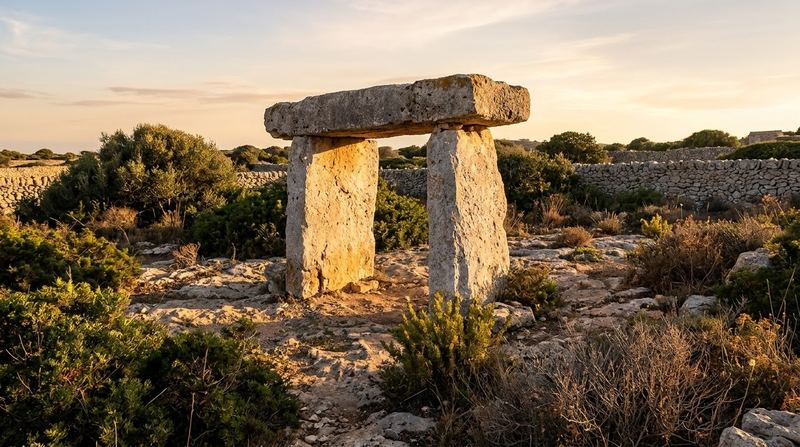

Esta guía reúne las decisiones de identidad de la marca para que
cualquier persona las aplique igual: el equipo, el cliente, otro
diseñador o una herramienta de IA. Está construida con el mismo
código que la web, así que lo que ves aquí es exactamente lo que se
publica.
css/tokens.css Colores y familias tipográficas
css/main.css Componentes compartidos
AGENTS.md Las mismas reglas, escritas para la IA
01 · Esencia de marca
Un cuaderno de campo de la isla
Menorca Singular organiza rutas culturales guiadas por
arqueólogos e historiadores. La identidad toma prestados los
recursos de su trabajo: registros numerados, láminas con pie de
figura, coordenadas, fichas de catalogación y papel milimetrado.
El resultado tiene que parecer hecho por quien investiga la isla,
no por una agencia de viajes.
Personalidad
Editorial
Se lee con calma, como un buen libro de viajes.
Rigurosa
Datos concretos y fuentes, nunca exageraciones.
Mediterránea
Piedra, cal, olivo y luz de tarde.
Serena
Mucho aire, pocos elementos y ningún grito comercial.
Lo que evitamos
Clichés de agencia de viajes masiva: sol y playa, colores flúor, insignias de oferta.
Urgencias sin datos que las respalden («plazas limitadas», «últimas unidades»).
La estética «elegante por defecto» de las herramientas de IA: la misma serif, el mismo crema y las mismas tres columnas con iconos.
Textos genéricos que servirían para cualquier destino.
02 · Logotipo
La taula, dibujada a mano
El símbolo es una taula, el monumento talayótico propio de
Menorca: un capitel horizontal sobre un único soporte vertical.
Se dibuja con un trazo grueso y redondeado, como hecho a mano, y
se acompaña del nombre en Brygada 1918.
Menorca Singular
Sobre blanco cal · versión principal
Menorca Singular
Sobre piedra de marés
Menorca Singular
Sobre verde oliva · versión en negativo
Área de respeto
Deja alrededor del símbolo, como mínimo, el alto del capitel. Ningún texto ni borde entra en esa zona.
Menorca Singular
Tamaño mínimo
Símbolo de 24 px de alto en pantalla. Por debajo, el trazo se empasta: usa el favicon.
Favicon
Taula maciza en blanco cal sobre oliva. Para pestañas, accesos directos y tamaños pequeños.
Usos incorrectos
No lo deformes ni cambies sus proporciones.
No lo recolorees con colores ajenos a la paleta.
No lo dibujes con dos pilares: eso es un dolmen, no una taula.
No lo uses en grafito sobre oliva: en fondos oscuros va en negativo.
03 · Color
Cinco colores sacados del paisaje
Usa siempre las variables de tokens.css,
nunca el código de color escrito a mano. El blanco cal domina;
el resto aparece en proporciones cada vez menores.
Blanco cal--color-blanco-cal#F7F4EFFondo principal. Las fachadas encaladas.
Piedra de marés--color-piedra-mares#D8C7B0Fondos secundarios: módulo de reserva, bloques destacados.
Verde oliva--color-verde-olivo#4E5D42Jerarquía: titulares, filetes, enlaces, etiquetas y pie de página.
Terracota--color-terracota#C2785CAcción: botones principales, numeraciones y la taula como marca.
Grafito--color-grafito#262624Texto de lectura. Su variante profunda (#1A1A18) es el texto de los botones.
Combinaciones permitidas
Contraste según WCAG 2.1: el texto normal necesita al menos 4,5:1
y el texto grande (24 px o más, o 19 px en negrita) al menos 3:1.
Muestra
Texto sobre fondo
Contraste
Uso
Aa
Grafito sobre blanco cal
13,8:1
Cualquier texto
Aa
Oliva sobre blanco cal
6,5:1
Titulares, enlaces y etiquetas
Aa
Grafito sobre piedra
9,2:1
Cualquier texto
Aa
Blanco cal sobre oliva
6,5:1
Pie de página y fondos oscuros
Aa
Grafito profundo sobre terracota
5,1:1
Texto de los botones principales
Aa
Oliva sobre piedra
4,3:1
Solo texto grande (24 px o más)
Aa
Terracota sobre blanco cal
3,1:1
Solo cifras y marcas grandes, nunca texto de lectura
Aa
Blanco cal sobre terracota
3,1:1
No usar en botones
Aa
Terracota sobre oliva
2,1:1
Nunca
04 · Tipografía
Tres familias, tres funciones
Están alojadas en el propio servidor, en web/fonts/, para no enviar datos de los visitantes a terceros, y se usan siempre a través de sus variables.
Titulares · --font-titulares
Brygada 1918
Aa Bb Ññ 0123 € ·
Revival de una tipografía de imprenta clásica. Transmite rigor académico y poso histórico. Titulares, nombres de rutas y guías, y cifras destacadas.
Texto e interfaz · --font-interfaz
IBM Plex Sans
Aa Bb Ññ 0123 € ·
Muy legible en pantalla y en tamaños pequeños. Párrafos, formularios, botones y navegación.
Registro · --font-registro
IBM Plex Mono
Aa Bb Ññ 0123 € ·
Solo para el lenguaje de cuaderno: etiquetas de registro, coordenadas y etiquetas de datos. Nunca en párrafos ni botones.
Todas viven en main.css y se
reutilizan en cualquier página. Antes de crear una variante,
comprueba si una de estas resuelve el caso.
Etiqueta de registro .registro
Numera y clasifica: secciones (01 · La ruta), rutas (Ruta nº 01 · Arqueología) o cargos. Puede llevar la taula delante.
01 · Cómo trabajamos
Ruta nº 02 · Arquitectura e historia
Cabecera de sección .section-head
Filete oliva, registro y H2. Abre cada bloque de contenido. Los titulares no llevan punto final.
04 · Antes de ir
Qué incluye y cómo prepararte
Lámina .fig y pie .pie
Las imágenes se tratan como láminas de un informe: marcas de registro en las esquinas y pie con lugar y coordenadas (.pie__coord).
Torre d'en Galmés, Alaior39°54′ N · 4°07′ E
Rejilla de datos .datos
Datos como en una ficha de catalogación: etiqueta en mono y valor en serif. Con .datos--texto para valores largos y .datos--4 para cuatro columnas en escritorio.
Duración
3 h
Grupo
Máx. 8
Nivel
Fácil
Precio
55 €
Especialidad
Cultura talayótica
Experiencia
Más de 10 años en excavaciones
Botones .button
El principal, en terracota, es la acción de la pantalla: uno por bloque. El secundario, .button--secondary, en contorno oliva. La flecha indica que se navega a otra página.
Reservar plazaVer itinerario Ver todas las rutas
Itinerario .itinerary
Las etapas de una ruta como un trazado en un plano. La etapa principal puede marcarse con la taula (.itinerary__step--taula).
18:30 h
La vida cotidiana en los círculos domésticos
19:30 h
El recinto de taula y el mundo simbólico
Ficha de ruta .ficha
Combina lámina, registro, título, texto, datos y botón. Los datos se alinean al pie aunque el título ocupe dos líneas. Sobre .banda-cuadricula, el papel milimetrado, en los bloques de catálogo.
Casco antiguo, Ciutadella40°00′ N · 3°50′ E
Ruta nº 02 · Arquitectura e historia
Ciutadella secreta: palacios y claustros
Patios señoriales que no abren al público y fachadas de marés del siglo XVIII, leídas piedra a piedra con un historiador del arte.
Duración
2,5 h
Grupo
Máx. 8
Nivel
Fácil
Precio
45 €
Ver itinerario
06 · Imagen
Fotografía de lugares y personas reales
La fotografía tiene que poder verificarse: lugares reconocibles,
los guías de verdad y la luz real de la isla. En esta fase del
proyecto las imágenes son marcadores provisionales generados con
IA; el cliente aportará las definitivas.
Luz de tarde, cálida y baja

Materia: piedra, cal y vegetación
Personas reales, en su lugar de trabajo
Sí
Luz natural de primera o última hora, con sombras largas.
Texturas de piedra, cal, madera y vegetación mediterránea.
Grupos pequeños y gestos de conversación, no poses.
Pie de figura con lugar y coordenadas: Fig. 01 — Descripción.
No
Imágenes de banco genéricas o de sol y playa.
Filtros saturados o virados que falseen el color de la piedra.
Imágenes generadas que representen mal un monumento real.
Textos alternativos que afirmen un lugar que la imagen no muestra.
07 · Tono de voz
Escribimos como quien investiga
Principios
Concreto antes que evocador. Nombres de lugares, horas, distancias y precios.
Datos en lugar de promesas. Si algo es escaso, se dice cuánto.
Cercano y riguroso. Tuteamos al lector y contamos también lo que todavía se discute.
Frases cortas. Una idea por frase y titulares sin punto final.
Fórmulas que evitamos
«No somos X. Somos Y.»
«Sin X, Y ni Z.»
«Descubre…», «Vive…», «Sumérgete…» como arranque de titular.
Tríadas de adjetivos sin contenido: «único, auténtico y mágico».
Antes y después
Ejemplos reales de la revisión de esta web.
Antes
Después
Por qué
Descubre la historia oculta de la isla.
Menorca se lee en la piedra
El original serviría para cualquier isla. El nuevo nombra el lugar y conecta con lo que hacen los guías.
Disponibilidad limitada para esta temporada.
Desde 45 € · Máx. 8 personas · Cancelación gratuita hasta 24 h antes
Una urgencia sin datos genera desconfianza. Los datos resuelven dudas reales de compra.
No somos animadores turísticos. Somos investigadores, divulgadores…
Marc y Aina dedican su trabajo a estudiar el patrimonio de Menorca.
Fórmula muy repetida. Mejor decir quién es quién que decir quién no eres.
Sin prisas, guiones memorizados ni banderas en alto.
Visitamos los yacimientos al final de la tarde, cuando se marchan los grupos grandes.
Describe una decisión concreta en lugar de una actitud.
Las plazas suelen completarse con varios días de antelación.
Cada salida tiene ocho plazas.
Un dato verificable en lugar de una presión que no se puede comprobar.
08 · Accesibilidad y adaptación
Para leerse bien en cualquier pantalla
Móvil primero
Se diseña para móvil y se amplía en 48 rem (768 px, tableta) y 64 rem (1024 px, escritorio). Muchos viajeros reservan ya en la isla, desde el teléfono.
Contraste
Mínimo 4,5:1 en texto normal y 3:1 en texto grande. Consulta la tabla de combinaciones de color.
Zonas táctiles
Botones y enlaces de navegación de al menos 44 × 44 px. Los botones miden 48 px de alto.
Foco visible
Contorno oliva de 2 px en todo elemento interactivo; en blanco cal sobre fondos oscuros.
Estructura
Un único H1 por página, sin saltos en la jerarquía de encabezados y con HTML semántico: listas, tablas y formularios con sus etiquetas.
Imágenes
Texto alternativo que describe lo que se ve. Las decorativas, como la taula de las etiquetas, se ocultan a los lectores de pantalla.
Movimiento
Animaciones cortas y suaves, que desaparecen si el usuario ha pedido reducir el movimiento.